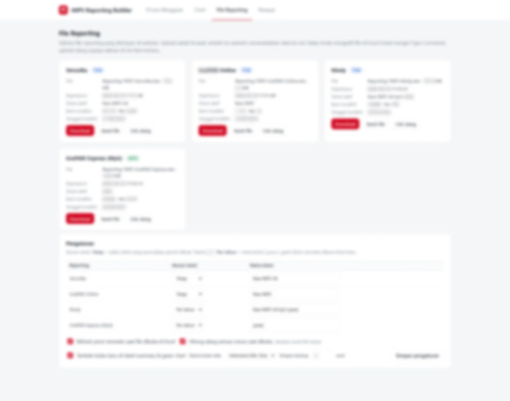
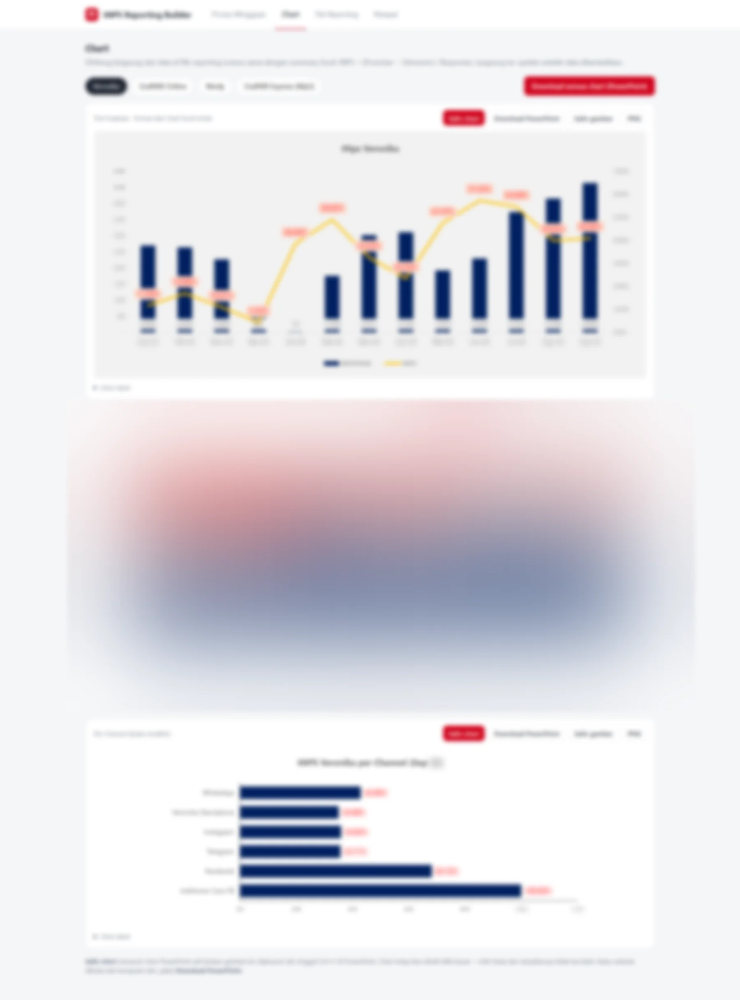
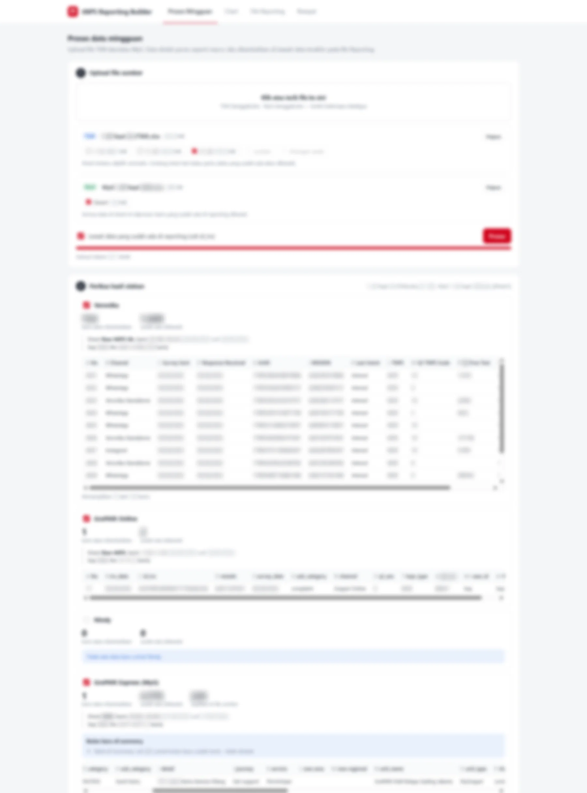
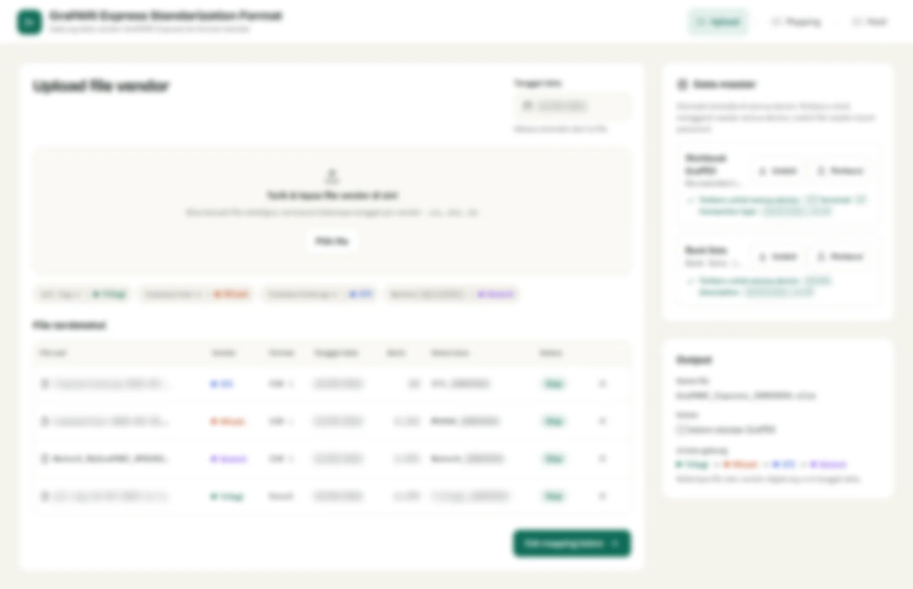
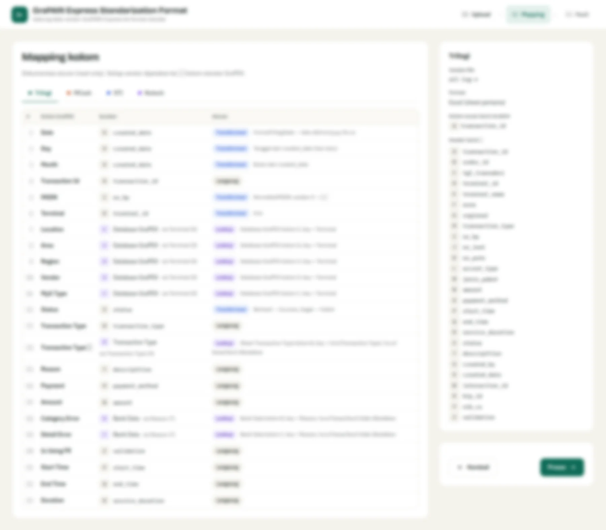
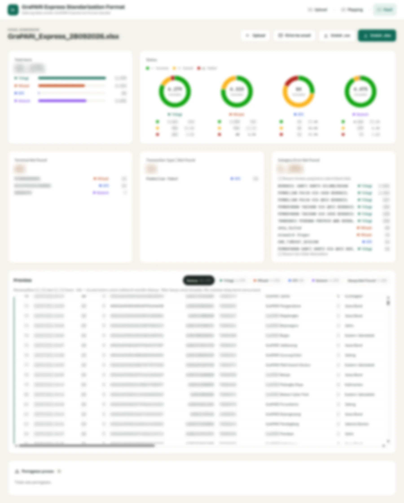
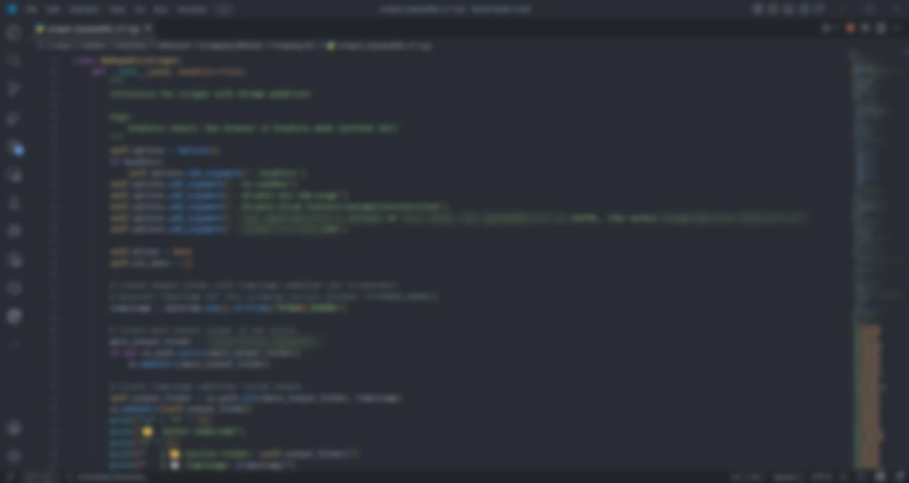
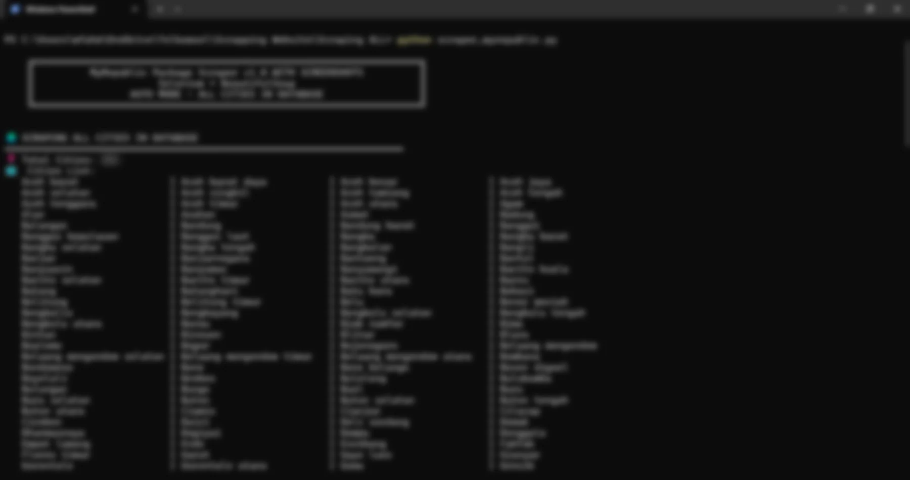
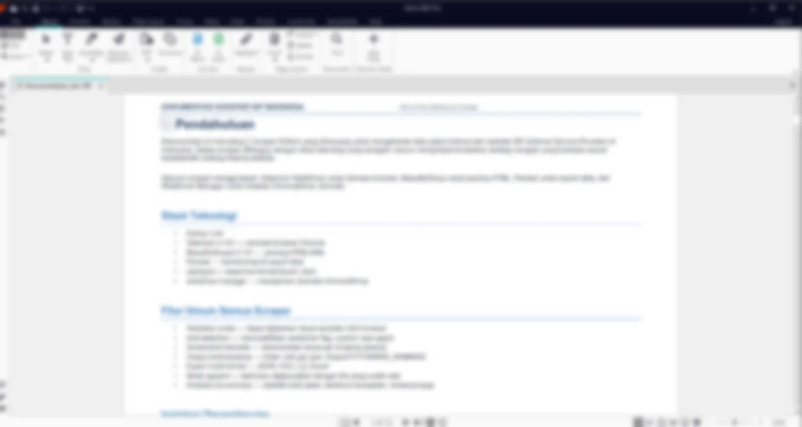

Each one covers the problem, the approach step by step, the outcome and what I would keep doing. Screens are blurred for confidentiality.
01Telkomsel, Self Service Operation and Engagement
From a 6 hour reporting routine to a 10 minute upload.
Three recurring reports were assembled by hand with Excel macros and Power Automate. I rebuilt them as one Python reporting builder.
Role
Analyst and builder
Timeline
Jun to Oct 2026
Tools
Python, Excel
Scope
3 reporting workflows
97%faster per run
6 h → 10 minprocessing time
3workflows automated
The problem
Each run meant collecting channel exports, pasting them into macro-driven workbooks and waiting on Power Automate flows. It took about six hours, and every manual step was a chance for an error to reach stakeholders.
The approach
Step 1Upload
Drop each channel export into the builder.
Step 2Clean and validate
Python standardizes columns and flags missing files.
Step 3Generate
tNPS and traffic tables and charts are built automatically.
Step 4Preview and export
Review, then export the report for stakeholders.

Upload screen

Generated charts

Preview and export
Minutes instead of hours
Reports that used to take most of a working day are ready in minutes, so the team spends that time reading the numbers instead of assembling them.
02Telkomsel, Self Service Operation and Engagement
Four vendors, four formats, one standard.
Every GraPARI Express vendor sent transaction data in its own layout. I built a dashboard that maps them all into a single 23-column format.
Role
Analyst and builder
Timeline
Jun to Oct 2026
Tools
Web dashboard
Scope
4 vendors
4 → 1vendor formats unified
23standard columns
0manual reformatting
The problem
Before any analysis, each vendor file had to be reshaped by hand so the columns lined up. It was slow, repetitive and easy to get wrong whenever a vendor changed its layout.
The approach
Step 1Upload vendor files
Raw files from each vendor go into one tool.
Step 2Detect format
The tool recognizes which vendor layout it is.
Step 3Map columns
Each source column maps into the 23-column standard.
Step 4Review and export
An overview shows the standardized result.

Vendor file upload

Column mapping

Standardized overview
Analysis starts immediately
Transaction data from all four vendors arrives in one format, so comparing vendors no longer needs a manual clean-up step.
03Telkomsel, Product Acquisition Marketing
Benchmarking 8 ISPs in 503 cities in one day, not fourteen.
Competitor packages and prices were collected by hand, city by city. I automated it with a Python scraper and fed the result into Tableau.
Role
Data analyst intern
Timeline
Nov 2025 to May 2026
Tools
Python, Selenium, BS4, Tableau
Scope
8 ISPs, 503 cities
98%less manual work
14 → 1 dayanalysis cycle
503cities covered
The problem
Each ISP website lists packages and prices per city. Checking 8 competitors across every city by hand took about 14 days, so the benchmark was always out of date.
The approach
Step 1Build scrapers
Selenium and BeautifulSoup, one per ISP website.
Step 2Run all cities
An automated loop across all 503 cities.
Step 3Structure
Packages and prices cleaned into one comparable table.
Step 4Visualize and document
Tableau dashboard and hand-over documentation.

Scraper code

Run across 503 cities

Tool documentation
A benchmark you can refresh any time
What took two weeks now takes a day, so pricing and package decisions can rest on current competitor data.
04Telkomsel, Product Acquisition Marketing
Three city tiers to target the IndiHome revamp.
One offer for every city ignores large economic differences. I segmented cities by economic capacity and growth with K-Means and GMM.
Role
Data analyst intern
Timeline
Nov 2025 to May 2026
Tools
Python, K-Means, GMM
Data
GRDP 2020 to 2024
3city tiers
k = 3K-Means clusters
2methods compared
The problem
The revamp needed to know where premium offers make sense and where affordability matters more, which a national average cannot show.
The approach
Step 1Collect
GRDP and GRDP per capita 2020 to 2024 per city.
Step 2Prepare
Log transformation and z-score standardization.
Step 3Cluster
K-Means with k = 3, compared with a Gaussian Mixture Model.